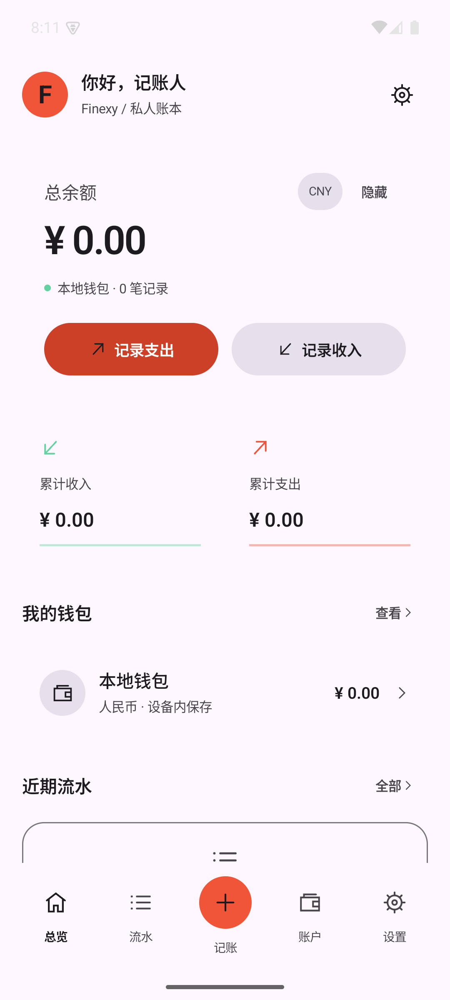
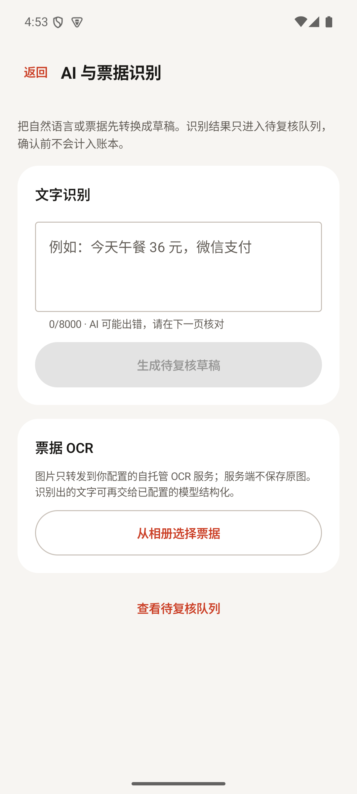
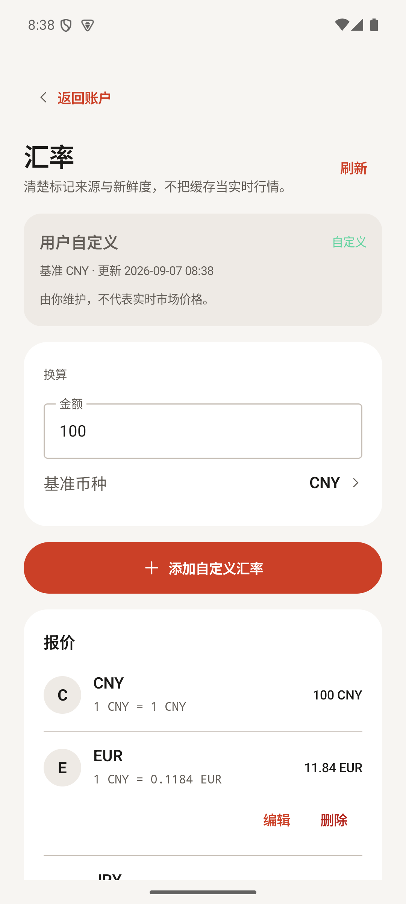

微信一句话记账
接入 OpenClaw（龙虾）等支持 MCP 的 AI 助手，在微信里发一句"午餐 36 元"，AI 解析金额、分类与账户，确认后入账。
开源 MIT · 自托管 · AI 驱动
Finexy 是自托管的 AI 个人财务工作台：Android 与 Web 多端联动，微信里发一句话就能记账， 票据本地 OCR、预算、资产与报表整合在统一界面。账本部署在你自己的 NAS 或服务器上，完全由你掌控。

核心能力
从随手记账到深度分析，Finexy 把个人财务的每个环节收进同一个界面。
接入 OpenClaw（龙虾）等支持 MCP 的 AI 助手，在微信里发一句"午餐 36 元"，AI 解析金额、分类与账户，确认后入账。
自托管 OCR 服务识别中文小票，再由大模型结构化字段。票据图片不出你的服务器，服务端不保存原图。
支出、收入、跨币种转账与期初余额全结构化，账户、分类、标签、备注一一对应。
月度预算进度实时可见，超支提前预警；资产清单记录购入与卖出，估值一目了然。
内置市场汇率参考与自定义汇率，来源与新鲜度清楚标记；跨币种转账自动给出换算建议。
房租、订阅等周期账单到期先进入待确认队列，确认后才生成流水，避免重复入账。
收支趋势、分类与标签统计、月度对比与 CSV 导出，桌面级高密度信息布局。
NAS 或服务器本地部署，SQLite 存储、完整备份恢复，并提供 MCP 接口连接 AI 客户端。
Web 工作台
高密度信息布局，重要数据一屏尽览；浏览器直接使用，也可安装为 PWA。
总余额、多币种切换与收支快捷入口，打开就知道财务状态。
逐月盈亏对比、分类与标签统计，CSV 导出随心分析。
月度支出限额实时进度，财务待办集中提醒，超支前先知道。
Android 客户端
原生 Kotlin 构建：离线随手记，回到网络自动同步；应用锁、待确认入账与 AI 记账随身携带。



多端联动
手机、浏览器、桌面客户端围绕同一份自托管账本协作，数据始终一致。
地铁里、超市中，Android 离线记账毫秒级完成。
回到网络自动上传增量，断网重试、冲突完整保留。
Web / PWA / Windows 的余额、预算与报表即时一致。
周期账单到期进入待确认队列，任何一端确认，处处生效。
AI 联动
Finexy 内置 MCP 接口，OpenClaw（龙虾）、Hermes Agent、Codex 等支持 MCP 的 AI 助手都能接入你的账本。配合 OpenClaw 的微信接入，聊天时顺手报一笔—— AI 解析金额、分类与账户，生成待复核草稿，确认后才入账，AI 不替你做决定。
AI 助手同样跑在你自己的机器上，模型 API Key 由你自己配置，聊天记录与账本都不经过第三方。
今天午餐 36 元，微信支付
已生成待复核草稿：
支出 ¥36.00 · 餐饮 · 微信支付
确认后才会入账。
确认
✓ 已入账。本月预算还剩 ¥2,140，放心花。
* 示意对话：实际回复内容取决于所接入的 AI 助手。
本地部署
群晖、威联通等 AMD64 NAS 与家用服务器都能跑。账本数据只落在你自己的磁盘上，不出内网。
docker pull ph97/finexy-bookkeeping:latest-amd64
公开镜像，无需登录。搜索时请使用完整名称 ph97/finexy-bookkeeping。
docker compose up -d
NAS 套件中心没有 Docker？可直接使用 NAS 部署配置包或离线镜像。
http://NAS的IP:8080/
浏览器直接使用，可安装为 PWA；也可选配 DeepSeek API Key 启用 AI 能力。
安全与隐私
不需要信任任何云服务商：账本、票据与 AI 密钥都留在你自己控制的范围内。
账本存在你的 NAS / 服务器，SQLite 单文件随取随迁；不依赖任何云账号，停服也不影响记账。
票据原图只发给你自己部署的 OCR 服务，不落第三方；模型 API Key 自行配置，识别结果先复核后入账。
应用 PIN 与生物识别锁、加密备份与恢复、多用户账本隔离——换设备、借手机都不担心。
MIT 协议全开源，每一行处理账本的代码都可复查；发布文件提供 SHA-256 校验。
下载
所有发布文件统一发布在 GitHub Releases，并提供 SHA-256 校验值。
原生 Kotlin 客户端，离线记账自动同步。当前为调试签名测试版。
在线部署配置包与离线镜像 tar，适配群晖、威联通等 AMD64 NAS。
安装版与便携版，x64。客户端连接到已部署的 Finexy 服务。
部署完成后浏览器直接访问，无需安装；可添加到主屏幕作为 PWA 使用。
Windows 包未做代码签名，首次运行 SmartScreen 可能提示；Android APK 为调试签名测试版。请只从本仓库 Releases 下载，并核对 SHA256SUMS.txt。